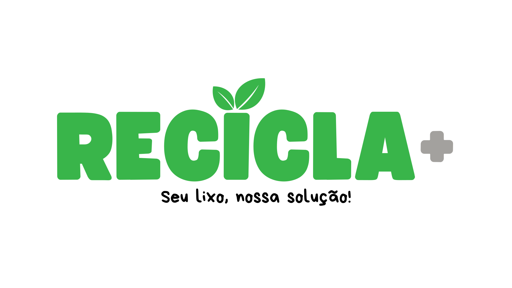

A RECICLA+ nasceu com a missão de tornar a reciclagem acessível e lucrativa.
Nosso objetivo é criar uma rede de empresas e comércios parceiros que atuam como pontos de coleta de materiais recicláveis, incentivando práticas sustentáveis e gerando benefícios para todos.
🚀 Facilitamos a coleta e reciclagem de resíduos.
♻️ Ajudamos empresas a transformar lixo em renda.
🌍 Contribuímos para um planeta mais limpo e sustentável.
Para participar, basta se cadastrar em nossa plataforma e indicar o espaço disponível para receber materiais recicláveis. Após a aprovação, seu comércio estará visível no nosso mapa de pontos de coleta.
Aceitamos plásticos, papel, vidro e metais. Materiais eletrônicos e outros resíduos especiais podem precisar de uma análise específica.
Periodicamente, nossa equipe agenda a retirada dos recicláveis em cada ponto de coleta cadastrado. Você será notificado previamente para organizar a entrega dos materiais.
Após a coleta e venda dos recicláveis para centros especializados, uma porcentagem do valor arrecadado é repassada para os pontos de coleta parceiros, garantindo uma renda extra sustentável.
Não! O cadastro e participação na RECICLA+ são gratuitos para os pontos de coleta.
Dentro da plataforma, você pode visualizar um painel com seu histórico de coletas, saldo acumulado e próximas retiradas programadas.
Sim! Caso não queira mais ser um ponto de coleta, basta solicitar o desligamento pelo painel do usuário ou entrar em contato com nosso suporte.